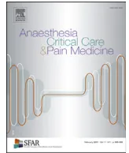

Anne Godiera,*, Pierre Fontanab, Serge Mottec, Annick Steibd, Fanny Bonhommee, Sylvie Schlumbergerf, Thomas Lecompteg, Nadia Rosencherh, Sophie Suseni, André Vincentellij, Yves Gruelk, Pierre Albaladejol, Jean-Philippe Colletm, members of the French Working Group on perioperative haemostasis (GIHP), P. Albaladejon, S. Belisleo, N. Blaisp, F. Bonhommeq, A. Borel-Derlonr, J.Y. Borgs, J.-L. Bossont, A. Cohenu, J.-P. Colletu, E. de Maistrev, D. Faraoniw, P. Fontanax, D. Garrigue Huety, A. Godierz, Y. Gruelaa, J. Guayo, J.F. Hardyo, Y. Huetu, B. Ickxab, S. Laporteac, D. Lasnead, J.H. Levyae, J. Llauaf, G. Le Galag, T. Lecompteah, S. Lessireai, D. Longroisz, S. Madi-Jebaraaj, E. Marretz, J.L. Masak, M. Mazighiak, P. Mismettial, P.E. Morangeam, S. Mottean, F. Mullierao, N. Nathanap, P. Nguyenaq, Y. Ozierar, G. Pernodt, N. Rosencherz, S. Rouilletas, P.M. Royat, C.M. Samamaz, S. Schlumbergerau, J.F. Schvedav, P. Siéaw, A. Steibax, S. Susenay, E. van Belleaz, P. van Der Lindenab, A. Vincentelliba, P. Zuffereybb
a Department of Anaesthesiology and Intensive Care, Fondation Rothschild, and Inserm UMR-S1140, Paris Descartes university, 75006 Paris, France
b Division of angiology and haemostasis and Geneva Platelet Group, University hospitals of Geneva, 1205 Geneva, Switzerland
c Department of Vascular Diseases, Erasme University Hospital, Université Libre de Bruxelles, 1050 Brussels, Belgium
d Department of Anaesthesiology and Intensive Care, NHC, University Hospital-Federation de Médecine Translationnelle, 67000 Strasbourg, France
e Department of Anaesthesiology, Pharmacology, and Intensive Care, Geneva University Hospitals, 1205 Geneva, Switzerland
f Department of Anaesthesiology, Foch Hospital, 92150 Suresnes, France
g Geneva Platelet Group (GpG), Department of Medical Specialties, Faculty of Medicine, Geneva University Hospitals, University of Geneva, 1205 Geneva, Switzerland
h Cochin Hospital, Paris Descartes University, AP-HP, 75014 Paris, France
i U1011 – EGID, Inserm, Institute of haematology-transfusion, université de Lille, CHU de Lille, 59000 Lille, France
j Department of cardiac surgery, Centre hospitalier régional universitaire de Lille, Lille, France
k Department of Haematology-Haemostasis, University-Hospital of Tours, 37044 Tours cedex, France
l Department of Anaesthesiology and Critical Care, Grenoble-Alpes University Hospital, Grenoble, ThEMAS, TIMC, UMR CNRS 5525, Université Grenoble-Alpes, 38700 Grenoble, France
m ACTION Study Group, Inserm UMR-S 1166, department of cardiology, institut de cardiologie, Pitié-Salpêtrière Hospital, Sorbonne Universités-Univ Paris 06 (UPMC), AP-HP, 75013 Paris, France
n Anesthésie-réanimation, Grenoble, France
o Anesthésie, Montréal, Canada
p Hématologie-hémostase, Montréal, Canada
q Anesthésie-réanimation, Genève, Switzerland
r Hématologie-hémostase, Caen, France
s Hémostase, Rouen, France
t Médecine vasculaire, Grenoble, France
u Cardiologie, Paris, France
v Hématologie, Dijon, France
w Anesthésie-réanimation, Toronto, Canada
x Hémostase, Genève, Switzerland
y Anesthésie-réanimation, Lille, France
z Anesthésie-réanimation, Paris, France
* Corresponding author.
E-mail address: agodier@fo-rothschild.fr (A. Godier).
aaHématologie, Tours, France
abAnesthésie-réanimation, Bruxelles, Belgium
acPharmacologie, Saint-Étienne, France
adHématologie, Paris, France
aeAnesthésie-réanimation, Durham, USA
afAnesthésie, Valence, Spain
agMédecine vasculaire, Ottawa, Canada
ahHématologie, Genève, Switzerland
aiAnesthésie, Namur, Belgium
ajAnesthésie, Beyrouth, Lebanon
akNeurologie, Paris, France
alPharmacologie clinique, Saint-Étienne, France
amHématologie, Marseille, France
anPathologie vasculaire, Bruxelles, Belgium
aoHématologie, Namur, Belgium
apAnesthésie-réanimation, Limoges, France
aqHématologie, Reims, France
arAnesthésie-réanimation, Brest, France
asAnesthésie réanimation, Bordeaux, France
atMédecine d'urgence, Angers, France
auAnesthésie-réanimation, Suresnes, France
avHématologie, Montpellier, France
awHématologie, Toulouse, France
axAnesthésie-réanimation, Strasbourg, France
ayHématologie Transfusion, Lille, France
azCardiologie, Lille, France
baChirurgie cardiaque, Lille, France
bbAnesthésie-réanimation, Saint-Étienne, France
Received 19 December 2017
Received in revised form 28 December 2017
Accepted 28 December 2017
Available online xxx
Antiplatelet agents
Surgery
Bleeding
Thrombosis
Regional anaesthesia
The French Working Group on Perioperative Haemostasis (GIHP) and the French Study Group on Haemostasis and Thrombosis (GFHT) in collaboration with the French Society for Anaesthesia and Intensive Care Medicine (SFAR) drafted up-to-date proposals for the management of antiplatelet therapy in patients undergoing elective invasive procedures. The proposals were discussed and validated by a vote; all proposals but one could be assigned with a high strength. The management of antiplatelet therapy is based on their indication and the procedure. The risk of bleeding related to the procedure can be divided into high, moderate and low categories depending on the possibility of performing the procedure in patients receiving antiplatelet agents (none, monotherapy and dual antiplatelet therapy respectively). If discontinuation of antiplatelet therapy is indicated before the procedure, a last intake of aspirin, clopidogrel, ticagrelor and prasugrel 3, 5, 5 and 7 days before surgery respectively is proposed. The thrombotic risk associated with discontinuation should be assessed according to each specific indication of antiplatelet therapy and is higher for patients receiving dual therapy for coronary artery disease (with further refinements based on a few well-accepted items) than for those receiving monotherapy for cardiovascular prevention, for secondary stroke prevention or for lower extremity arterial disease. These proposals also address the issue of the potential role of platelet functional tests and consider management of antiplatelet therapy for regional anaesthesia, including central neuraxial anaesthesia and peripheral nerve blocks, and for coronary artery surgery.
© 2018 The Authors. Published by Elsevier Masson SAS on behalf of Société française d'anesthésie et de réanimation (Sfar). This is an open access article under the CC BY license (http://creativecommons.org/licenses/by/4.0/).
Antiplatelet agents (APAs) are prescribed to prevent arterial thrombosis and especially the recurrence of thrombotic events. The four main oral APAs have two distinct pharmacological targets: aspirin inhibits the enzyme cyclooxygenase 1 and therefore thromboxane A2 synthesis, while clopidogrel, prasugrel and ticagrelor inhibit the adenosine diphosphate (ADP) pathway via the platelet receptor P2Y12.
Many patients receiving long-term antiplatelet therapy will at some time require an elective invasive procedure. This setting requires specific management of antiplatelet therapy. The discontinuation of antiplatelet therapy to perform an invasive procedure increases the risk of thrombotic events while the continuation increases the bleeding risk during the procedure.
These two risks must be assessed sequentially to determine the optimal management for the planned invasive procedure, and to choose between continuation, discontinuation or modification of antiplatelet therapy, or postponement of the procedure.
The perioperative management of antiplatelet therapy has been the subject of a few national and international guidelines, but they are piecemeal or old, and do not take recent work into account [1–3]. The French Working Group on Perioperative Haemostasis (GIHP) and the French Study Group on Haemostasis and Thrombosis (GFHT) have been working together to draft up-to-date proposals for the management of antiplatelet therapy in patients undergoing elective invasive procedures.
The methodology for establishing these proposals was as follows. The different parts of this text were assigned to five working groups, consisting of members of the GIHP or the GFHT.
Each of the groups made proposals based on data from the literature. The other groups then re-read, discussed and modified these proposals, which were then subjected to critical analysis by all GIHP and GFHT members. Finally, these proposals were validated by a vote (37 voters), thereby determining the strength of each of the proposals, as follows. To make a proposal on an item, at least 50% of the members had to express their agreement (for an agreement to be strong, the threshold was set at 70%), while disagreement was when fewer than 20% of them agreed. In the absence of agreement, the proposals were reformulated and voted upon again to achieve a better consensus. The proposals were made in collaboration with the French Society for Anaesthesia and Intensive Care Medicine (SFAR).
Continuing antiplatelet therapy in the periprocedural period is likely to increase the risk of bleeding intra- and postoperatively depending on the invasive procedure and the type of APA. The main issue is to determine the situations where the increased bleeding risk is not acceptable, thereby needing perioperative changes in antiplatelet therapy. Studies evaluating the risk of bleeding associated with the perioperative continuation of one or more APAs have methodological drawbacks. Nevertheless, as a general rule, the bleeding risk due to clopidogrel is lower than that with the new P2Y12 receptor inhibitors, prasugrel and ticagrelor, and is greater with dual therapy (aspirin + P2Y12 inhibitor) than with monotherapy (most often aspirin). The aspirin-induced bleeding risk could be lower than that with clopidogrel, since thromboxane A2 plays a lesser role in platelet activation than ADP [4].
The risk of bleeding due to antiplatelet therapy varies from one invasive procedure to another and includes not only the volume of bleeding and transfusion requirement but also the onset of a haematoma in the event of functional surgery or the need for surgical revision. The risk of bleeding during invasive procedures is usually classified pragmatically, depending on the possibility of performing the procedure in APA-treated patients [5–11]. Several classifications have been proposed by various scientific societies and globally by the “Stent after Surgery” group [12]. These classifications may vary depending on the surgical teams and patients considered.
The optimal duration of discontinuation of an APA before an invasive procedure is the shortest duration that can reduce the excess risk of bleeding associated with it. It depends on the pharmacokinetic and pharmacodynamic characteristics of the APA and on published clinical studies evaluating APA-related bleeding based on their duration of discontinuation for various invasive procedures, including surgeries that may be considered as models, especially cardiac surgery, but also total hip or knee replacement, hip fracture surgery, etc.
The basic points to be considered for determining the duration of a possible discontinuation of an APA, if deemed necessary, are as follows:
A2 and ADP, and on the platelet stimulus. Their exploration in the laboratory or at the bedside remains imperfect;
The differences between APAs in the duration of discontinuation are explained by a combination of factors: thromboxane A2 plays a lesser role in platelet activation than ADP; thromboxane A2 produced by the fraction of naive platelets can stimulate all platelets in the vicinity, whether or not their cyclooxygenase 1 enzymes are inhibited; the level of inhibition before discontinuation, which classifies P2Y12 inhibitors according to their potency (prasugrel and ticagrelor being more potent than clopidogrel); for ticagrelor, the reversibility of its inhibitory effect.
For the three APAs with an irreversible effect, i.e. aspirin, clopidogrel and prasugrel, recovery after discontinuation depends on the turnover of circulating platelets, senescent inhibited platelets being removed from the circulation and replaced by newly produced platelets, unexposed to the drug ("naïve"). Finally, in the absence of a loading dose, the full inhibitory effect that the APAs can induce in a patient takes several days to be obtained.
The French Haute Autorité de la santé (HAS) recommends that aspirin should not be given for three days before the procedure [2]. However, this recommended duration may be adjusted. Aspirin inhibits the synthesis of thromboxane A2 irreversibly. The time required for the full recovery of thromboxane A2 synthesis is that of the total turnover of circulating platelets, i.e. platelet lifetime, which is normally about 10 days but may in some circumstances be shorter. However, recovery does not need to be total for the complete correction of the platelet functions that depend on thromboxane A2 synthesis [13–15], nor for haemostatic competence to be sufficient to safely undergo an invasive procedure. Interindividual variability in correction of platelet function explains why not all subjects have complete correction after four days [16]. The association between results of platelet function tests and bleeding risk is not straightforward. For instance, in a randomised trial investigating six durations of aspirin discontinuation, from 0 to five days, in 258 patients treated with 100 mg aspirin and requiring tooth extraction [15], (also with 212 patients not taking aspirin), the effects of aspirin on platelet aggregation induced by arachidonic acid assessed with the Multiplate® disappeared 96 hours after aspirin withdrawal. However, the incidence of haemorrhagic complications was
comparable regardless of the duration of discontinuation, including < 96 hours. Finally, faster recovery of aspirin-inhibited platelet function may occur in some patients, e.g. due to accelerated platelet turnover, such as diabetics, patients with high weight [17] and those with thrombocytosis in a setting of myeloproliferative neoplasia.
The haemostatic safety threshold guaranteeing the absence of perioperative risk of bleeding associated with aspirin treatment has not been established. Moreover, the functional platelet tests used in studies addressing this issue have yielded inconsistent results [18]. The data is therefore too preliminary to use those tests in clinical practice for the management of aspirin before an elective invasive procedure.
In conclusion, a three-day washout of aspirin leads to an improvement in platelet functions that is often but not always sufficient for full correction of platelet functions. However, for procedures with a high risk of bleeding, i.e. the only procedures for which discontinuation of aspirin is essential, the goal is to completely correct the platelet functions inhibited by aspirin. This must be achieved in all patients undergoing these procedures. It is therefore proposed that invasive procedures carrying a high risk of bleeding such as neurosurgery should be performed only after five days of aspirin washout.
Although in most patients the maximal effect on platelets is achieved with 75 mg o.d., for various reasons a higher dose may be given. Since the bleeding risk is not greater with 300 than 75–100 (but for gastrointestinal bleeding), there is no reason to change the chosen regimen perioperatively.
The HAS recommends that clopidogrel, prasugrel and ticagrelor should not be given for five, seven and five days before the procedure, respectively [2]. The ESC/ESA recommendations are comparable [1].
Given the variability of platelet response to P2Y12 inhibitors in terms of both intensity and changes over time, the suggestion to guide duration of their discontinuation according to the results of a platelet functional test is attractive [19]. However, while there is a consensus on the existence of a relationship between the level of the impairment of platelet functions and the risk of spontaneous haemorrhage after insertion of an endovascular prosthesis [20], the relationship between this level and the associated perioperative risk of bleeding have received little attention. Several tests may be used to evaluate platelet functions while on antiplatelet therapy with a P2Y12 inhibitor, but sometimes inconsistent results have been found [21,22]. Moreover, definitions of perioperative bleeding events widely differ. Nevertheless, studies to date tend to show that the intensity of inhibition of platelet functions that depend on ADP is associated with an increased risk of perioperative bleeding. A meta-analysis showed that late discontinuation of P2Y12 inhibitors was associated with an increased risk of death and reoperations due to bleeding compared to earlier discontinuation in patients undergoing coronary artery surgery [23]. Patients allocated to prasugrel treatment in the TRITON-TIMI 38 study and requiring coronary artery surgery had a four-fold greater risk of major bleeding than those treated with clopidogrel [24]. Furthermore, patients who had taken ticagrelor in the 24 hours before coronary artery surgery tended to have larger chest tube drainage than those treated with clopidogrel in the PLATO study [25].
It has therefore been proposed that evaluation of platelet function might improve the prediction of the perioperative
bleeding risk over standard discontinuation durations based on the type of P2Y12 inhibitor, such as clopidogrel [26]. An early study used TEG® Platelet Mapping for clopidogrel-treated patients undergoing coronary artery surgery. It showed that being in the higher tertile of platelet function inhibition measured with this test was the only factor independently associated with increased blood loss and transfusion requirement [26]. Another study showed that a strategy based on preoperative testing of platelet functions with the same test (TEG® Platelet Mapping) to determine the timing of CABG in clopidogrel-treated patients was associated with the same amount of bleeding as that observed in clopidogrel-naïve patients and a 50% shorter waiting time than the standard five days [27].
Emerging evidence based on functional platelet testing challenges the five-day duration of ticagrelor discontinuation before surgery that carries a high bleeding risk. A Swedish cardiac surgery registry compared perioperative bleeding in the setting of emergency or semi-emergency coronary artery surgery in patients treated with dual antiplatelet therapy consisting of aspirin and clopidogrel () or ticagrelor () [28]. The incidence of major bleeding was high when ticagrelor or clopidogrel were discontinued less than 24 hours before surgery. In the ticagrelor group, there was no significant difference between discontinuation 72–120 hours or more than 120 hours before surgery, as opposed to what was observed in the clopidogrel group. The overall incidence of major bleeding complications was lower with ticagrelor than with clopidogrel.
An analysis of a Dutch registry also showed that a three-day washout of ticagrelor could be considered [29]. Between 2012 and 2014, 626 APA-treated patients underwent coronary artery surgery with cardiopulmonary bypass, including 222 with dual antiplatelet therapy. They were stratified according to the duration of discontinuation of the P2Y12 inhibitor before surgery: ticagrelor discontinued hours before surgery (Group Ti , ); ticagrelor discontinued 72 to 120 hours before surgery (Group Ti 72–120, ); clopidogrel discontinued hours (Clo group , ) or between 120–168 hours before surgery (Group Clo 120–168, ). The standard duration of discontinuation of P2Y12 inhibitors in the center before scheduled surgery was 120 hours. Transfusion requirements were higher in the Ti group and the Clo group than in the aspirin-alone group, (72.1% and 71.2% respectively vs. 41.3%, for both comparisons), but surgical re-exploration rates were not different. Multivariate analysis comparing the Clo groups , C 120–168, Ti and Ti 72–120 with the aspirin-alone group revealed Clo group and Ti group as predictors of bleeding-related complications. No increased incidence in bleeding-related complications was seen when ticagrelor was discontinued hours or clopidogrel hours prior to surgery. Although these data relate to cardiac surgery, they could probably be extrapolated to non-cardiac invasive procedures since the correction of platelet functions does not depend on the procedure.
However, the correction of platelet functions that depend on ADP 72 to 120 hours after discontinuing ticagrelor showed significant interindividual variability. ADP-induced aggregation was assessed with the Multiplate® after ticagrelor discontinuation in 25 patients undergoing urgent coronary artery surgery [30]. While most patients had recovered a platelet response deemed sufficient after 72 hours of discontinuation (threshold at 22 aggregation units), 25% of patients remained below this threshold. However, in another prospective study that also included patients treated with ticagrelor and requiring cardiac surgery, preoperative ADP-induced platelet aggregation assessed by Multiplate® predicted the risk for severe bleeding complications [31]. Importantly, more patients with ADP-induced
aggregation below the 22-unit threshold developed severe bleeding than those above (61% vs. 14%, ).
Altogether, these data suggest that a 72-to-120-hour ticagrelor discontinuation is sufficient for most patients. However, within this window, the correction of platelet functions inhibited by ticagrelor is variable from one patient to another. Platelet inhibition persists in about one quarter of patients after a 72-hour discontinuation and is associated with the risk of perioperative bleeding. It is therefore proposed that invasive procedures should be performed only after five days of ticagrelor discontinuation.
Based on these data, both the European Societies of Cardiovascular and Cardio-Thoracic Surgery and the Society of Thoracic Surgeons used to recommend assessing the level of inhibition of platelet functions to determine the interval between the last intake of P2Y12 inhibitors and the invasive procedure [11,32]. However, studies supporting these recommendations are few and underpowered to accurately assess bleeding events, and involved patients treated with clopidogrel or ticagrelor and not those treated with prasugrel. Therefore, the most appropriate assessment of platelet function remains debated. Finally, the type of surgery studied in this context is almost always coronary artery surgery, and the safety of the determination of the optimal duration of P2Y12 inhibitor discontinuation based on a laboratory test before another type of intervention such as neurosurgery is not established. Thus, it seems premature to recommend the routine use of such an attitude, which is no longer proposed in the recent guidelines of the European Society of Cardiology [1]. Available data suggest at most the use of a platelet functional test to reduce the duration of discontinuation of P2Y12 inhibitors in urgent coronary artery surgery.
The discontinuation of long-term antiplatelet therapy is associated with the occurrence of cardio-neurovascular events, the frequency of which varies with the indication for antiplatelet therapy [8,33]. The thrombotic risk associated with discontinuing treatment should therefore be assessed according to each of its indications.
The perioperative effect of aspirin prescribed for primary or secondary cardiovascular prevention has been evaluated only in a few randomised trials in non-cardiac surgery. The PEP trial compared preoperative 160 mg aspirin continued for 35 days with placebo in 13,356 patients undergoing surgery for hip fracture [34]. Aspirin increased bleeding, RBC transfusion was more frequent and larger, and there was more digestive bleeding. In addition, although it reduced venous thromboembolic events, aspirin did not reduce the incidence of myocardial infarction or stroke.
The POISE-2 trial evaluated the benefit of aspirin versus placebo in 10,010 patients undergoing non-cardiac surgery [35]. Patients were stratified according to whether they were treated with long-term aspirin before surgery. Aspirin did not decrease the composite endpoint of myocardial infarction and mortality but increased the risk of major bleeding. The authors concluded that the risk of continuing aspirin perioperatively was greater than the risk of discontinuing it. However, fewer than 1/3 of the included patients had a cerebrovascular or cardiovascular history. In addition, patients with recent stents and those scheduled for carotid surgery were excluded, since it is recommended to continue aspirin for carotid endarterectomy [36]. At most, POISE-2 suggests that aspirin has no perioperative benefit for patients with low cardiovascular risk. No conclusion can be drawn for high-risk patients.
The STRATAGEM trial compared placebo to aspirin prescribed for secondary prevention (coronary artery disease, ischaemic stroke or transient ischaemic attack, peripheral arterial disease) in 291 patients undergoing intermediate- or high-risk non-cardiac surgery [37]. For 41% of them, there was a history of acute coronary syndrome. The trial, which was interrupted prematurely for inclusion difficulties, showed no difference in the occurrence of major thrombotic or haemorrhagic events.
Finally, the ASINC trial compared aspirin with placebo in patients with cardiac risk factors undergoing elective, high- or intermediate-risk non-cardiac surgery [38]. More than 2/3 of patients had coronary artery disease and 1/5 had cerebrovascular disease. The trial showed that aspirin reduced major cardiac events by 80% compared with placebo. There was no excess risk of bleeding but the trial was unpowered due to its premature termination.
For patients receiving antiplatelet therapy for secondary stroke prevention, published data, which are scarce, suggest that its discontinuation is associated with the occurrence of thrombotic events. Thus, the risk of recurrent ischaemic stroke or major cardiovascular events following APA discontinuation was investigated during the follow-up of PROFESS, a randomised, double-blind, factorial study that included 20,332 patients with recent ischaemic stroke (4 months prior to inclusion) [39]. The aim of the trial was to evaluate the efficacy of the combination of extended-release dipyridamole with aspirin versus clopidogrel monotherapy
and the efficacy of telmisartan versus placebo [40]. The secondary analysis of the trial showed that patients who discontinued antiplatelet therapy for any reason had an absolute risk increase in stroke recurrence or a cardiovascular event of 2.02% and 1.83% within 30 days of discontinuation of dipyridamole/aspirin and clopidogrel, respectively, compared to patients who continued treatment [39]. These results may have been biased because the authors did not perform a multivariate adjustment to account for the characteristics of patients who discontinued treatment. Cohort and case-control studies have also reported an increased risk of recurrent stroke following discontinuation of antiplatelet therapy [41-44].
Patients receiving antiplatelet therapy for lower extremity artery disease are at high risk of cardiovascular events, particularly in the postoperative period [45,46], but the incidence of cardiovascular events related to discontinuation in such patients is not known. A cohort study involving 181 consecutive patients admitted to hospital for acute lower limb ischemia showed that a thrombotic event occurred in 11 patients (6.1%) after discontinuing aspirin, four of whom stopped before a surgical procedure [47].
Four to 15% of patients with coronary stents require non-cardiac surgery within one year after stent implantation [48]. The management of those patients while still on dual antiplatelet therapy (DAPT) involves consideration of: (1) the increased perioperative bleeding risk, especially when DAPT is continued; (2) the risk of stent thrombosis, especially if DAPT has to be discontinued; and (3) the consequences of delaying the invasive procedure [49-51]. A multidisciplinary approach involving the anaesthetist, the interventional cardiologist, the cardiologist,
the surgeon, the haematologist and the oncologist, if any, could be used to assess the risks, weigh them up and determine the best management accordingly.
The perioperative period is a period of risk for ischaemic events. Regardless of the continuation or discontinuation of antiplatelet therapy, invasive procedures induce a proinflammatory and prothrombotic state thereby increasing the risk of coronary thrombosis at the level of the stented vascular segment as well as throughout the coronary vasculature [52,53]. An increased risk of ischaemic events following non-cardiac surgery has been demonstrated with first-generation drug-eluting stents [54] but also in the first weeks after stent implantation [55,56]. Thus, the benefit/risk ratio of an invasive procedure programmed after stent implantation and/or myocardial infarction should be systematically assessed in a multidisciplinary manner, especially in the case of high-risk procedures such as malignant tumor surgery or vascular aneurysm repair. To reduce the ischaemic risk and the risk of bleeding and transfusion related to the continuation of antiplatelet therapy, the invasive procedure should be postponed when possible until the end of the recommended duration of DAPT.
Previous recommendations on the duration of APA discontinuation and resumption for non-cardiac surgery [57,58] were based on registries of patients treated with first-generation drug-eluting stents [50,59].
Compared to first-generation drug-eluting stents or to bare metal stents, the new-generation drug-eluting stents are more effective and safer, with a lower risk of stent thrombosis and a shorter minimum duration of DAPT [60–63]. In addition, the PARIS registry has shown that DAPT discontinuation grounded on physician judgment in patients requiring an invasive procedure is not associated with an increased risk of ischaemic event, unlike discontinuation for poor compliance or bleeding [64].
Most registries agree that the risk of the recurrence of the ischaemic event reaches a stable level three to six months after active stent implantation [8,9,42]. However, the absence of a control group of non-operated patients exposes results to biases related to the type or urgency of invasive procedure. This makes it difficult to establish an optimal duration allowing an invasive procedure with a minimal risk of an ischaemic event after stenting or acute coronary syndrome. A North American registry circumvented those limitations by pairing two cohorts of stented patients, one undergoing an invasive procedure, the other not. It confirmed that the increased risk of cardiovascular events related to surgery is greater during the first six months after stenting, and stabilises at 1% thereafter [65]. A Danish registry also offset those limitations by comparing two cohorts of patients treated invasively, one with active stent implantation in the previous 12 months () and the other without known history of coronary artery disease and undergoing the same type of procedure () [48]. It showed an increased risk of myocardial infarction and cardiac death in the group with a previous stenting. Interestingly, this increased risk was limited to the first month after stent implantation, suggesting that the invasive procedure should be postponed for at least one month, if possible, after stent implantation.
Analysis of a registry of 26,661 US veterans undergoing non-cardiac surgery within 24 months of stent implantation showed that major cardiac events were more common in patients with a stent implanted for myocardial infarction (7.5%) compared with other indications, including unstable angina (2.7%) or revascularisation not associated with acute coronary syndrome (2.6%) [66]. The risk of events was much higher when the invasive procedure was performed within three months after stent implantation for myocardial infarction compared to the third group (OR: 5.25, 95% CI: 4.08–6.75). The risk decreased over time but remained higher even 12–24 months after stenting. The
Table 1
Characteristics of high-thrombotic risk after stent implantation [1].
| Chronic kidney disease (i.e. creatinine clearance < 60 mL/min) |
| Diffuse multivessel disease especially in diabetic patients |
| Prior stent thrombosis on adequate antiplatelet therapy |
| Stenting of the last remaining patent coronary artery |
| At least 3 lesions treated |
| At least 3 stents implanted |
| Bifurcation with 2 stents implanted |
| Total stent length > 60 mm |
| Treatment of a chronic total occlusion |
authors proposed that invasive procedures in patients with a stent implanted for myocardial infarction should be postponed for six months. The same postponement was proposed for patients with myocardial infarction without stent implantation, as well as for patients who had stent implantation associated with a high thrombotic risk (Table 1).
For patients whose invasive procedure cannot be deferred until the end of the recommended duration of DAPT, the durations of P2Y12 inhibitor discontinuation are those mentioned above. For patients at very high risk of stent thrombosis, particularly those requiring discontinuation of both APAs in the first month, a bridging with a reversible intravenous APA was considered [67]. However, for rapidly reversible anti-GPIIb-IIIa agents such as eptifibatide and tirofiban, the meta-analysis of the eight studies that included 280 patients concluded that there was a possible risk of bleeding associated with a persistent risk of stent thrombosis [68]. Cangrelor, a parenteral and reversible inhibitor of the P2Y12 receptor, is another option in the perioperative setting, with a well-established antithrombotic effect [69] and a faster reversibility than anti-GPIIb-IIIa agents [70]. However, none of these parenteral APAs have marketing authorisation for this indication. The use of concomitant parenteral anticoagulation is not recommended given the potential increase in the risk of bleeding.
same day, according to the risk of postoperative bleeding (strong agreement).
Spinal epidural haematoma is a very rare but potentially catastrophic complication of central neuraxial anaesthesia (ALR-R), which includes spinal anaesthesia and epidurals with or without catheters [71]. Risk factors include haemostatic disorders, traumatic punctures and female gender [3,71]. The risk is greater for epidural anaesthesia, especially with a catheter, than for spinal anaesthesia [3].
The risk of spinal epidural haematoma related to aspirin seems very low. It has only been reported anecdotally after many years of practice in a very large number of patients undergoing spinal anaesthesia [3]. No spinal epidural haematoma attributed to aspirin has been reported in the large studies that evaluated this risk in orthopaedics and obstetrics. In the few case reports of spinal haematoma involving aspirin therapy, additional complicating factors were present, particularly injections of low molecular weight heparin close to a neuraxial procedure or catheter ablation [3,72].
The P2Y12 inhibitors carry a greater risk of bleeding than aspirin. Cases of peri-medullary haematoma have been reported with clopidogrel. Spinal anaesthesia is not advisable with these APAs [3,71].
ticagrelor), unless those APAs were discontinued respectively 5, 7 and 5 days before the procedure (strong agreement).
Wound haematoma is a rare complication of peripheral nerve blocks [73]. Haematoma carries three risks: surgical revision for evacuation, transfusion and nerve damage by compression. Treatment with APAs, especially P2Y12 inhibitors, is a risk factor for haematoma [3]. However, aspirin probably carries a very low risk. The risk of haematoma is greater during deep punctures, in the absence of compression, and when antiplatelet and anticoagulant therapies are combined [3]. Ultrasound guidance reduces the risk of vascular puncture [74].
Peripheral nerve blocks can be divided into two groups according to the degree of bleeding risk:
While peribulbar anaesthesia has been performed in ophthalmology without any complications in large series of aspirin-treated patients, few data are available in patients treated with clopidogrel and even less with ticagrelor or prasugrel [76]. The risk of bleeding with peribulbar anaesthesia is low. Nevertheless, if bleeding occurs, compression is not possible. While the SFAR and the French Society of Ophthalmology recommend performing peribulbar anaesthesia with a single puncture in patients treated with a direct oral anticoagulant, they have not adopted a position for patients treated with P2Y12 inhibitors (http://attitude.sfo.asso.fr/professionnels). Topical or sub-tenonial anaesthesia may be preferred if they are sufficient.
Most patients requiring coronary revascularisation by coronary artery surgery are treated with one or two APAs. It is important to assess the risk of cardiovascular complications at preoperative discontinuation of these treatments and to determine whether this risk is greater than the risk of bleeding associated with their continuation during surgical revascularisation, especially in the event of cardiopulmonary bypass.
The aim of continued perioperative administration of aspirin is to reduce the likelihood of perioperative cardiovascular events. A meta-analysis of 13 randomised trials ( patients) involving patients undergoing coronary artery surgery assigned to preoperative aspirin therapy or no aspirin/placebo concluded that aspirin reduces perioperative myocardial infarction without reducing mortality, but at the cost of increased bleeding, blood transfusion, and surgical re-exploration [77]. The ATACAS randomised trial, with 2100 patients undergoing coronary artery surgery, concluded differently as the administration of preoperative aspirin resulted in neither a lower risk of death or thrombotic complications nor a higher risk of bleeding, including reoperation for haemorrhage, than that with placebo [78]. Finally, as in non-cardiac surgery, low molecular weight heparins should not be used for aspirin bridging. They promote bleeding, are difficult to antagonise and are less effective [79].
In elective coronary artery surgery, the continuation of P2Y12 inhibitors led to an increase in the risk of bleeding without any clear antithrombotic benefit. The meta-analysis of the three randomised trials CLARITY, CURE and CREDI concluded that the risk of immediate complications after coronary artery surgery (death, myocardial infarction and stroke) is the same whether patients are treated preoperatively with aspirin and clopidogrel or with aspirin alone, but that the risk of bleeding is increased by clopidogrel [80]. Above all, the risk of major bleeding and reoperation is increased if clopidogrel is discontinued less than five days before CABG surgery [81].
The new P2Y12 inhibitors also carry an increased risk of perioperative bleeding. In the randomised TRITON-TIMI-38 trial, in
which patients with acute coronary syndrome were randomised to treatment with aspirin and either clopidogrel or prasugrel, 3646 patients underwent coronary artery surgery. Patients treated with prasugrel had more major bleeding, platelet transfusions and surgical re-explorations compared to clopidogrel, and a lower rate of death [82]. Similarly, continuation of ticagrelor before coronary artery surgery increases the incidence of major bleeding complications [28].
The usefulness of platelet functional tests to adjust the discontinuation duration of P2Y12 inhibitor discontinuation before coronary artery surgery has been discussed above. Recent data suggest that a platelet functional assessment test could be used to reduce discontinuation time of P2Y12 inhibitors in semi-urgent CABG surgery. Studies showing the benefit of platelet function evaluation were performed with the Multiplate® and TEG® Platelet Mapping. These tests could be used for their negative predictive value regarding bleeding.
AG: Honoraria and travel fees from Bayer-Healthcare, Boehringer-Ingelheim, Bristol-Myers-Squibb Pfizer and Sanofi.
PF: travel grant de Bayer.
SM: honoraria from Bayer-Healthcare, Boehringer-Ingelheim, Pfizer, Daiichi-Sankyo, and Bristol-Myers-Squibb.
AS: grants and personal fees from sanofi-aventis, leo-pharma, boehringer-ingelheim, bayer, daiichi sanyo, takeda, BMS.
SS: Research support: LFB, Stago, Carmat, CoreWave, CSL-Behring; travel support: Novo, LFB, Shire, CSL-Behring, Roche, Sobi.
PA: Honoraria and travel fees from Sanofi, Bayer, BMS-Pfizer, Pfizer, Sandoz, Boehringer-Ingelheim, Portola, B-Braun.
JPC: research grants from BMS and Medtronic; consulting/lecture fees from Astra-Zeneca, BMS, Sanofi-Aventis.
TL, NR and YG declare that they have no competing interest.
the European Association for Cardio-Thoracic Surgery (EACTS). Eur Heart J 2018;39:213–60.
[2] HAS, ANSM. Recommandation de bonne pratique : transfusion de plaquettes : produits, indications. HAS; 2015.
[3] Gogarten W, Vandermeulen E, Van Aken H, Kozek S, Llau JV, Samama CM, et al. Regional anaesthesia and antithrombotic agents: recommendations of the European Society of Anaesthesiology. Eur J Anaesthesiol 2010;999–1015.
[4] CAPRIE Steering Committee. A randomised, blinded, trial of clopidogrel versus aspirin in patients at risk of ischaemic events (CAPRIE). CAPRIE Steering Committee. Lancet 1996;348:1329–39.
[5] HAS. Bon usage des agents antiplaquettaires; 2012 [Available from: https://www.has-sante.fr/portail/jcms/c_1264095/fr/bon-usage-des-agents-antiplaquettaires].
[6] HAS. Antiagrégants plaquettaires : prise en compte des risques thrombotique et hémorragique lors d'une intervention endoscopique urologique chez le coronarien; 2012.
[7] HAS. Antiagrégants plaquettaires : prise en compte des risques thrombotique et hémorragique lors d'une endoscopie digestive chez le coronarien; 2012.
[8] Burger W, Chemnitzius J-M, Kneissl GD, Rücker G. Low-dose aspirin for secondary cardiovascular prevention – cardiovascular risks after its perioperative withdrawal versus bleeding risks with its continuation – review and meta-analysis. J Intern Med 2005;257:399–414.
[9] Merritt JC, Bhatt DL. The efficacy and safety of perioperative antiplatelet therapy. J Thromb Thrombolysis 2004;17:21–7.
[10] Veitch AM, Vanbiervliet G, Gershlick AH, Boustiere C, Baglin TP, Smith L-A, et al. Endoscopy in patients on antiplatelet or anticoagulant therapy, including direct oral anticoagulants: British Society of Gastroenterology (BSG) and European Society of Gastrointestinal Endoscopy (ESGE) guidelines. Endoscopy 2016;48:385–402.
[11] Ferraris VA, Saha SP, Oestreich JH, Song HK, Rosengart T, Reece TB, et al. 2012 update to the Society of Thoracic Surgeons guideline on use of antiplatelet drugs in patients having cardiac and noncardiac operations. Ann Thorac Surg 2012;94:1761–81.
[12] Rossini R, Musumeci G, Visconti LO, Bramucci E, Castiglioni B, De Servi S, et al. Perioperative management of antiplatelet therapy in patients with coronary stents undergoing cardiac and non-cardiac surgery: a consensus document from Italian cardiological, surgical and anaesthesiological societies. EuroIntervention 2014;10:38–46.
[13] Li C, Hirsh J, Xie C, Johnston MA, Eikelboom JW. Reversal of the anti-platelet effects of aspirin and clopidogrel. J Thromb Haemost 2012;10:521–8.
[14] Le Manach Y, Kahn D, Bachelot-Loza C, Le Sache F, Smadja DM, Remones V, et al. Impact of aspirin and clopidogrel discontinuation on platelet function in patients undergoing major vascular surgery. PLoS ONE 2014;9:e104491.
[15] Lee J, Kim JK, Kim JH, Dunnu T, Park S-H, Park SJ, et al. Recovery time of platelet function after aspirin withdrawal. Curr Ther Res Clin Exp 2014;76:26–31.
[16] Zisman E, Erport A, Kohanovsky E, Ballagulah M, Cassel A, Quitt M, et al. Platelet function recovery after cessation of aspirin: preliminary study of volunteers and surgical patients. Eur J Anaesthesiol 2010;27:617–23.
[17] Rocca B, Santilli F, Pitocco D, Mucci L, Petrucci G, Vitacolonna E, et al. The recovery of platelet cyclooxygenase activity explains interindividual variability in responsiveness to low-dose aspirin in patients with and without diabetes. J Thromb Haemost 2012;10:1220–30.
[18] Karon BS, Tolan NV, Koch CD, Wockenfus AM, Miller RS, Lingineni RK, et al. Precision and reliability of 5 platelet function tests in healthy volunteers and donors on daily antiplatelet agent therapy. Clin Chem 2014;60:1524–31.
[19] Mahla E, Tantry US, Gurbel PA. Platelet function testing before CABG is recommended in the guidelines: but do we have enough evidence? J Interv Cardiol 2015;28:233–5.
[20] Tantry US, Bonello L, Aradi D, Price MJ, Jeong Y-H, Angiolillo DJ, et al. Consensus and update on the definition of on-treatment platelet reactivity to adenosine diphosphate associated with ischemia and bleeding; 2013;2261–73.
[21] Vries MJ, Bouman HJ, Olie RH, Veenstra LF, Zwaveling S, Verhezen PWM, et al. Determinants of agreement between proposed therapeutic windows of platelet function tests in vulnerable patients. Eur Heart J Cardiovasc Pharmacother 2017;3:11–7.
[22] Berger PB, Kirchner HL, Wagner ES, Ismail-Sayed I, Yahya S, Benoit C, et al. Does preoperative platelet function predict bleeding in patients undergoing off pump coronary artery bypass surgery? J Interv Cardiol 2015;28:223–32.
[23] Morici N, Moja L, Rosato V, Oreglia JA, Sacco A, De Marco F, et al. Time from adenosine di-phosphate receptor antagonist discontinuation to coronary bypass surgery in patients with acute coronary syndrome: meta-analysis and meta-regression. Int J Cardiol 2013;168:1955–64.
[24] Wiviott SD, Braunwald E, McCabe CH, Montalescot G, Ruzlylo W, Gottlieb S, et al. Prasugrel versus clopidogrel in patients with acute coronary syndromes. N Engl J Med 2007;357:2001–15.
[25] Held C, Asenblad N, Bassand J-P, Becker RC, Cannon CP, Claeys MJ, et al. Ticagrelor versus clopidogrel in patients with acute coronary syndromes undergoing coronary artery bypass surgery: results from the PLATO (platelet inhibition and patient outcomes) trial. J Am Coll Cardiol 2011;57:672–84.
[26] Kwak YL, Kim J-C, Choi Y-S, Yoo K-J, Song Y, Shim JK. Clopidogrel responsiveness regardless of the discontinuation date predicts increased blood loss and transfusion requirement after off-pump coronary artery bypass graft surgery. J Am Coll Cardiol 2010;56:1994–2002.
[27] Mahla E, Suarez TA, Bliden KP, Rehak P, Metzler H, Sequeira AJ, et al. Platelet function measurement-based strategy to reduce bleeding and waiting time in clopidogrel-treated patients undergoing coronary artery bypass graft surgery: the timing based on platelet function strategy to reduce clopidogrel-associated bleeding related to CABG (TARGET-CABG) study. Circ Cardiovasc Interv 2012;5:261–9.
[28] Hansson EC, Jidéus L, Åberg B, Bjursten H, Dreifaldt M, Holmgren A, et al. Coronary artery bypass grafting-related bleeding complications in patients treated with ticagrelor or clopidogrel: a nationwide study. Eur Heart J 2016;37:189–97.
[29] Tomšić A, Schotborgh MA, Manshanden JSJ, Li WWL, de Mol BAJM. Coronary artery bypass grafting-related bleeding complications in patients treated with dual antiplatelet treatment. Eur J Cardiothorac Surg 2016;50:849–56.
[30] Hansson EC, Malm CJ, Hesse C, Hornestam B, Dellborg M, Rexius H, et al. Platelet function recovery after ticagrelor withdrawal in patients awaiting urgent coronary surgery. Eur J Cardiothorac Surg 2017;51:633–7.
[31] Malm CJ, Hansson EC, Åkesson J, Andersson M, Hesse C, Shams Hakimi C, et al. Preoperative platelet function predicts perioperative bleeding complications in ticagrelor-treated cardiac surgery patients: a prospective observational study. Hemmings HC, editor. Br J Anaesth 2016;117:309–15.
[32] Alfonso F, Collet JP, Cremer J, Falk V, Filippatos G, Hamm C, et al. ESC/EACTS guidelines on myocardial revascularisation: the Task Force on Myocardial Revascularisation of the European Society of Cardiology (ESC) and the European Association for Cardio-Thoracic Surgery (EACTS). Developed with the special contribution of the European Association of Percutaneous Cardiovascular Interventions (EAPCI). Eur J Cardiothorac Surg 2014;46:517–92.
[33] Wagner ML, Khoury JC, Alwell K, Rademacher E, Woo D, Flaherty ML, et al. Withdrawal of antithrombotic agents and the risk of stroke. J Stroke Cerebrovasc Dis 2016;25:902–6.
[34] Prevention of pulmonary embolism and deep vein thrombosis with low dose aspirin: pulmonary embolism prevention (PEP) trial. Lancet 2000;355:1295–302.
[35] Devereaux PJ, Mrkobrada M, Sessler DI, Leslie K, Alonso-Coello P, Kurz A, et al. Aspirin in patients undergoing noncardiac surgery. N Engl J Med 2014;370:1494–503.
[36] Ricotta JJ, Aburahma A, Ascher E, Eskandari M, Faries P, Lal BK, et al. Updated society for vascular surgery guidelines for management of extracranial carotid disease: executive summary. J Vasc Surg 2011;54:832–6.
[37] Mantz J, Samama C-M, Tubach F, Devereaux PJ, Collet JP, Albaladejo P, et al. Impact of preoperative maintenance or discontinuation of aspirin on thrombotic and bleeding events after elective non-cardiac surgery: the multicentre, randomised, blinded, placebo-controlled, STRATAGEM trial. Br J Anaesth 2011;107:899–910.
[38] Oscarsson A, Gupta A, Fredrikson M, Jarhult J, Nystrom M, Pettersson E, et al. To continue or discontinue aspirin in the perioperative period: a randomised, controlled clinical trial. Br J Anaesth 2010;104:305–12.
[39] Weimar C, Cotton D, Sha N, Sacco RL, Bath PMW, Weber R, et al. Discontinuation of antiplatelet study medication and risk of recurrent stroke and cardiovascular events: results from the PROfESS study. Cerebrovasc Dis 2013;35:538–43.
[40] Sacco RL, Diener H-C, Yusuf S, Cotton D, Ounpuu S, Lawton WA, et al. Aspirin and extended-release dipyridamole versus clopidogrel for recurrent stroke. N Engl J Med 2008;359:1238–51.
[41] Sibon I, Orgogozo J-M. Antiplatelet drug discontinuation is a risk factor for ischaemic stroke. Neurology 2004;62:1187–9.
[42] Broderick JP, Bonomo JB, Kissela BM, Khoury JC, Moomaw CJ, Alwell K, et al. Withdrawal of antithrombotic agents and its impact on ischaemic stroke occurrence. Stroke 2011;42:2509–14.
[43] Maulaz AB, Bezerra DC, Michel P, Bogousslavsky J. Effect of discontinuing aspirin therapy on the risk of brain ischaemic stroke. Arch Neurol 2005;62:1217–20.
[44] García Rodríguez LA, Cea Soriano L, Hill C, Johansson S. Increased risk of stroke after discontinuation of acetylsalicylic acid: a UK primary care study. Neurol 2011;76:740–6.
[45] Criqui MH, Langer RD, Fronek A, Feigelson HS, Klauber MR, McCann TJ, et al. Mortality over a period of 10 years in patients with peripheral arterial disease. N Engl J Med 1992;326:381–6.
[46] L'Italien GJ, Cambria RP, Cutler BS, Leppo JA, Paul SD, Brewster DC, et al. Comparative early and late cardiac morbidity among patients requiring different vascular surgery procedures. J Vasc Surg 1995;21:935–44.
[47] Albaladejo P, Geeraerts T, Francis F, Castier Y, Lesèche G, Marty J. Aspirin withdrawal and acute lower limb ischemia. Anesth Analg 2004;99:440–3.
[48] Egholm G, Kristensen SD, Thim T, Olesen KKW, Madsen M, Jensen SE, et al. Risk associated with surgery within 12 months after coronary drug-eluting stent implantation. J Am Coll Cardiol 2016;68:2622–32.
[49] Chee YL, Crawford JC, Watson HG, Greaves M. Guidelines on the assessment of bleeding risk prior to surgery or invasive procedures. British Committee for Standards in Haematology. Br J Haematol 2008;140:496–504.
[50] Fleisher LA, Fleischmann KE, Auerbach AD, Barnason SA, Beckman JA, Bozkurt B, et al. ACC/AHA guideline on perioperative cardiovascular evaluation and management of patients undergoing noncardiac surgery: a report of the American College of Cardiology/American Heart Association Task Force on practice guidelines. J Am Coll Cardiol 2014;64:e77–137.
[51] Siller-Matula JM, Petre A, Delle-Karth G, Huber K, Ay C, Lordkipanidzé M, et al. Impact of preoperative use of P2Y12 receptor inhibitors on clinical outcomes in cardiac and non-cardiac surgery: a systematic review and meta-analysis. Eur Heart J Acute Cardiovasc Care 2016;6:753–70.
[52] Diamantis T, Tsiminikakis N, Skordylaki A, Samiotaki F, Vernadakis S, Bongiorno C, et al. Alterations of haemostasis after laparoscopic and open surgery. Hematology 2007;12:561–70.
[53] Rajagopalan S, Ford I, Bachoo P, Hillis GS, Croal B, Greaves M, et al. Platelet activation, myocardial ischaemic events and postoperative non-response to aspirin in patients undergoing major vascular surgery. J Thromb Haemost 2007;5:2028–35.
[54] Hawn MT, Graham LA, Richman JS, Itani KMF, Henderson WG, Maddox TM. Risk of major adverse cardiac events following noncardiac surgery in patients with coronary stents. JAMA 2013;310:1462–511.
[55] Berger PB, Kleiman NS, Pencina MJ, Hsieh W-H, Steinhubl SR, Jeremias A, et al. Frequency of major noncardiac surgery and subsequent adverse events in the year after drug-eluting stent placement results from the EVENT (evaluation of drug-eluting stents and ischaemic events) registry. JACC Cardiovasc Interv 2010;3:920–7.
[56] van Kuijk J-P, Flu W-J, Schouten O, Hoeks SE, Schenkeveld L, de Jaegere PPT, et al. Timing of noncardiac surgery after coronary artery stenting with bare metal or drug-eluting stents. Am J Cardiol 2009;104:1229–34.
[57] Grines CL, Bonow RO, Casey DE, Gardner TJ, Lockhart PB, Moliterno DJ, et al. Prevention of premature discontinuation of dual antiplatelet therapy in patients with coronary artery stents: a science advisory from the American Heart Association, American College of Cardiology, Society for Cardiovascular Angiography and Interventions, American College of Surgeons, and American Dental Association, with representation from the American College of Physicians. Catheter Cardiovasc Interv 2007;69:334–40.
[58] Levine GN, Bates ER, Blankenship JC, Bailey SR, Bittl JA, Cercek B, et al. 2011 ACCF/AHA/SCAI guideline for percutaneous coronary intervention: executive summary: a report of the American College of Cardiology Foundation/American Heart Association Task Force on Practice Guidelines and the Society for Cardiovascular Angiography and Interventions; 2011;2574–609.
[59] Fleisher LA, Beckman JA, Brown KA, Calkins H, Chaikof EL, Chaikof E, et al. ACC/AHA 2007 guidelines on perioperative cardiovascular evaluation and care for noncardiac surgery: executive summary: a report of the American College of Cardiology/American Heart Association Task Force on practice guidelines (writing committee to revise the 2002 guidelines on perioperative cardiovascular evaluation for noncardiac surgery) developed in collaboration with the American Society of Echocardiography, American Society of Nuclear Cardiology, Heart Rhythm Society, Society of Cardiovascular Anesthesiologists, Society for Cardiovascular Angiography and Interventions, Society for Vascular Medicine and Biology, and Society for Vascular Surgery. J Am Coll Cardiol 2007;50:1707–32.
[60] Gwon H-C, Hahn J-Y, Park KW, Song YB, Chae I-H, Lim D-S, et al. Six-month versus 12-month dual antiplatelet therapy after implantation of drug-eluting stents: the efficacy of xience/promus versus cypher to reduce late loss after stenting (EXCELLENT) randomised, multicenter study. Circulation 2012;125:505–13.
[61] Schulz-Schüpke S, Byrne RA, Berg ten JM, Neumann F-J, Han Y, Adriaenssens T, et al. ISAR-SAFE: a randomised, double-blind, placebo-controlled trial of 6 vs. 12 months of clopidogrel therapy after drug-eluting stenting. Eur Heart J 2015;36:1252–63.
[62] Colombo A, Chieffo A, Frasher A, Garbo R, Masotti-Centol M, Salvatella N, et al. Second-generation drug-eluting stent implantation followed by 6- versus 12-month dual antiplatelet therapy: the SECURITY randomised clinical trial. J Am Coll Cardiol 2014;64:2086–97.
[63] Eisenstein EL, Anstrom KJ, Kong DF, Shaw LK, Tuttle RH, Mark DB, et al. Clopidogrel use and long-term clinical outcomes after drug-eluting stent implantation. JAMA 2007;297:159–68.
[64] Mehran R, Baber U, Steg PG, Ariti C, Weisz G, Wittenbichler B, et al. Cessation of dual antiplatelet treatment and cardiac events after percutaneous coronary intervention (PARIS): 2 year results from a prospective observational study. Lancet 2013;382:1714–22.
[65] Holcomb CN, Graham LA, Richman JS, Rhyne RR, Itani KMF, Maddox TM, et al. The incremental risk of noncardiac surgery on adverse cardiac events following coronary stenting. J Am Coll Cardiol 2014;64:2730–9.
[66] Holcomb CN, Hollis RH, Graham LA, Richman JS, Valle JA, Itani KM, et al. Association of coronary stent indication with postoperative outcomes following noncardiac surgery. JAMA Surg 2016;151:462–8.
[67] Savonitto S, D'Urbano M, Caracciolo M, Barlocco F, Mariani G, Nichelatti M, et al. Urgent surgery in patients with a recently implanted coronary drug-eluting stent: a phase II study of "bridging" antiplatelet therapy with tirofiban during temporary withdrawal of clopidogrel. Br J Anaesth 2010;104:285–91.
[68] Warshauer J, Patel VG, Christopoulos G, Kotsia AP, Banerjee S, Brilakis ES. Outcomes of preoperative bridging therapy for patients undergoing surgery after coronary stent implantation: a weighted meta-analysis of 280 patients from eight studies. Catheter Cardiovasc Interv 2015;85:25–31.
[69] Steg PG, Bhatt DL, Hamm CW, Stone GW, Gibson CM, Mahaffey KW, et al. Effect of cangrelor on periprocedural outcomes in percutaneous coronary interventions: a pooled analysis of patient-level data. Lancet 2013;382:1981–92.
[70] Angiolillo DJ, Firstenberg MS, Price MJ, Tummala PE, Hutyra M, Welsby IJ, et al. Bridging antiplatelet therapy with cangrelor in patients undergoing cardiac surgery: a randomised controlled trial. JAMA 2012;307:265–74.
[71] Sfar. Les blocs périmédullaires chez l'adulte. Ann Fr Anesth Reanim 2007;26:720–52.
[72] Vela Vásquez RS, Peláez Romero R. Aspirin and spinal haematoma after neuraxial anaesthesia: myth or reality? Br J Anaesth 2015;115:688–98.
[73] Les blocs périphériques des membres chez l'adulte. Ann Fr Anesth Reanim 2003;22:567–81.
[74] Sfar. Anesthésie loco-régionale périneurale (ALR-PN); 2017.
[75] Kozek-Langenecker S. Modern anaesthetic techniques and anticoagulation. Hamostaseologie 2006;16:1–10.
[76] Takaschima A, Marchioro P, Sakae TM, Porporatti AL, Mezzomo LA, De Luca Canto G. Risk of haemorrhage during needle-based ophthalmic regional anaesthesia in patients taking antithrombotics: a systematic review. PLoS ONE 2016;11:e0147227.
[77] Hastings S, Myles P, McIlroy D. Aspirin and coronary artery surgery: a systematic review and meta-analysis. Br J Anaesth 2015;115:376–85.
[78] Myles PS, Smith JA, Forbes A, Silbert B, Jayarajah M, Painter T, et al. Tranexamic acid in patients undergoing coronary-artery surgery. N Engl J Med 2017;376:136–48.
[79] Nenna A, Spadaccio C, Prestipino F, Lusini M, Sutherland FW, Beattie GW, et al. Effect of preoperative aspirin replacement with enoxaparin in patients undergoing primary isolated on-pump coronary artery bypass grafting. Am J Cardiol 2016;117:563–70.
[80] Biancari F, Airaksinen KEJ, Lip GYH. Benefits and risks of using clopidogrel before coronary artery bypass surgery: systematic review and meta-analysis of randomised trials and observational studies. J Thorac Cardiovasc Surg 2012;143 [665–675.e4].
[81] Cao C, Indraratna P, Ang SC, Manganas C, Park J, Bannon PG, et al. Should clopidogrel be discontinued before coronary artery bypass grafting for patients with acute coronary syndrome? A systematic review and meta-analysis. J Thorac Cardiovasc Surg 2014;148:3092–8.
[82] Smith PK, Goodnough LT, Levy JH, Poston RS, Short MA, Weerakkody GJ, et al. Mortality benefit with prasugrel in the TRITON-TIMI 38 coronary artery bypass grafting cohort: risk-adjusted retrospective data analysis. J Am Coll Cardiol 2012;60:388–96.